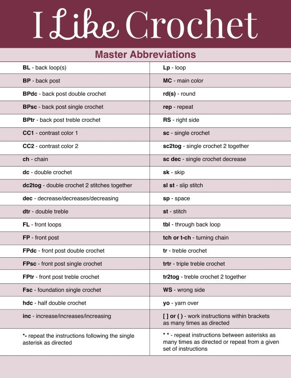

Speak the Language of Crochet
Crochet terminology is important because patterns use abbreviations to keep instructions short and easy to follow. Once you learn this language, reading a pattern becomes less confusing and you can focus on the fun part—creating! Keep this chart nearby while you practice.
